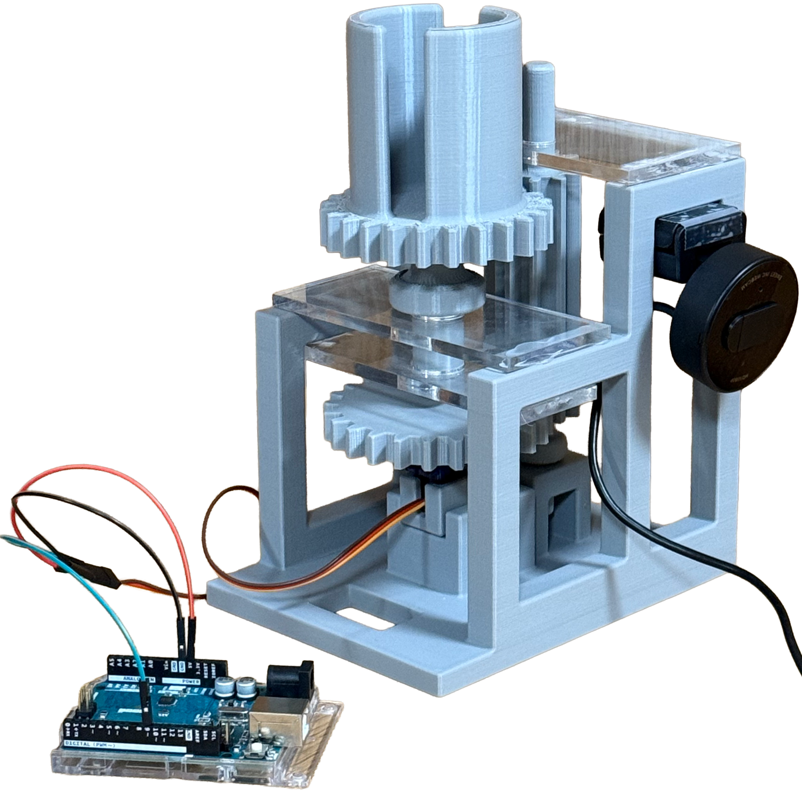

Mechatronics & Computer Vision
Motion-Tracking Phone Holder
An automated camera mount designed to track human movement using computer vision.
Python
OpenCV
Raspberry Pi
Servo Motor
Arduino
SolidWorks
Lead Mechanical Designer
May – Aug 2025

System Architecture
The system uses a webcam to detect position via OpenCV. This data is sent via serial to an Arduino, actuating a high-torque servo motor.
Recognition

Featured in Boston University College of Engineering BTEC-SILab Newsletter
Published in the Sept 2025 Edition of the BTEC-SILab Newsletter